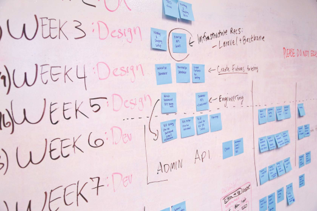

Configuring and setting up the VSB and VIP is known as platform development.
Introduction to Projects and Workspaces

Learning Objectives
After this section you will be able to:
- Describe the benefits of Wind River Projects
- Describe role of the workspace
- Describe the different VxWorks project types
Targets and connections are the hardware side of a VxWorks project. The software side are the VxWorks project types and workspaces.
What are VxWorks projects and workspaces?
VxWorks projects are a collection of project types that operate different aspects of a real-time system. This includes kernel image, libraries of code, operating both the user space and the kernel space, and where all the files are stored in a VxWorks project.
The different VxWorks project types
There are four main categories of project types in VxWorks, here is a summary of each:
VxWorks source build (VSB)
The VSB is the heart of a VxWorks project. This is the main project type you will make and link all other project types to it. The VSB manages:
- The VxWorks kernel libraries
- The BSP or CPU types
- Which layer version you want to deploy
VxWorks image project (VIP)
The VIP is required to launch VxWorks in an embedded system. The VIP makes a kernel image in binary that can be read and deployed by the bootloaders. The features of the VIP include:
- Being based on a VSB or another existing VIP
- Being able to modify tool flags, build macros, paths, and other specifications
- Kernel configuration profiles, including bootApp
Application projects
Application projects consist of three main types: real-time processes (RTP), shared libraries, and downloadable kernel modules (DKM). You are able to add multiple build targets and edit source file contents in these project types.
- Real-time processes- RTPs are used in user memory space. This means that an RTP can only use system resources that are directly assigned to it, creating a buffer between it and the kernel. RTPs are useful when you don't want the application to interfere with another application in the project.
- Shared libraries- The shared libraries are a useful project type as they let you share parts of or a full RTP on the system. This lowers the memory footprint and allows for the reusing of methods.
- Downloadable-kernel module- The DKM runs in the kernel space. This allows it to have full access to system resources, making them highly flexible. This extra flexibility can be dangerous, so using malloc and semaphores are important.
Makefile-based projects
Makefile projects are automated project types. You mus define their build structure and create their makefile. It can speed up the development of a project by automatically setting system parameters. The makefile project type parallels the other application project types, just with the added make features.
There is also a toggle to turn off the makefile for the build in case you want to manually run the project.